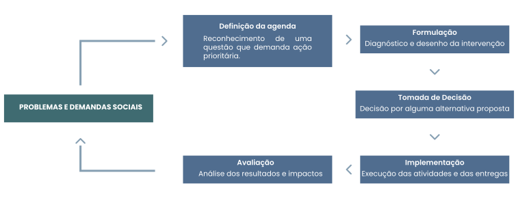

TÓPICO 2
ESTRATÉGIAS DE AVALIAÇÃO NO CONTEXTO DA APS
TÓPICO 2
ESTRATÉGIAS DE AVALIAÇÃO NO CONTEXTO DA APS
A ilustração a seguir apresenta o ciclo de formulação de uma intervenção baseado no ciclo de formulação de uma política, conforme descrito por Jannuzzi (2016).
